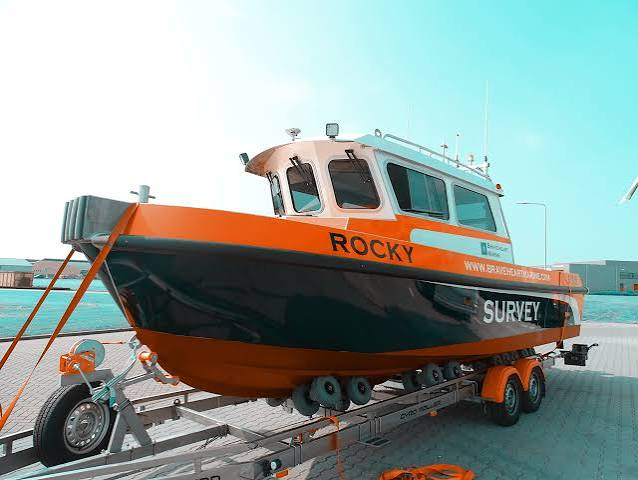

Established as a premier provider of marine engineering, port logistics, and vessel support solutions along the East African seaboard, our company was founded to bridge the gap between global shipping standards and localized maritime expertise." Headquartered strategically in the port city of Mombasa, Kenya, the firm was established to handle complex offshore logistics, coastal marine transport, and comprehensive harbor service management.

To be the premier leader in the East African maritime sector by delivering innovative, safe, and sustainable marine solutions that drive the regional blue economy forward." We envision a future where our brand is synonymous with absolute operational excellence, advanced maritime logistics, and world-class environmental stewardship along the Indian Ocean coastline. By continuously investing in modern fleet technology and local human capital, we aim to be the most trusted oceanic gateway partner for both domestic and international shipping industries, setting the benchmark for commercial growth and marine sustainability across Kenya.
To build a world-class center of excellence in innovative research for sustainable blue economy and fisheries development." This vision focuses on generating cutting-edge scientific knowledge and oceanographic data to directly empower coastal industries, protect aquatic biodiversity, and ensure national food security. By prioritizing data-driven ecological stewardship, Kenya aims to lead the Eastern African region in sustainable marine resource preservation and climate-resilient coastal management

our company operates in the Kenyan marine industry, providing essential services and products to support the growth and development of the sector.